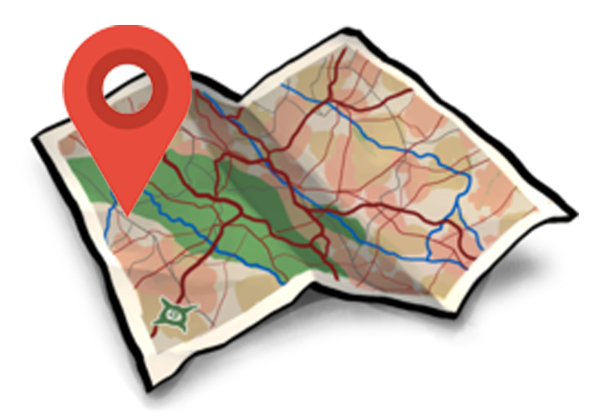

BATUR UNESCO GLOBAL GEOPARK
ABANG ERAWANG CLUSTER
why abang erawang?
Abang Erawang Cluster consists of three village in Kintamani, which is Suter, Abang Songan, and Abang Batudinding that located on Eastern part of Kintamani sub-district. This Cluster has a freshing aura because of its dense forest and stunning view that can be sighted in top of its hill.
Here what you can found on Abang Erawang Cluster!
(+) If you love watching a cultural prossesion of any religious ceremony, so this is the place. You can visit Bubung Renteng unique temple and watch Saba Tegen ceremony to see how people worship and be thankful with the gods.
(+) Abang Erawang with its dense forest and great visibility are a suitable place to do a camping activity. Here you can feel the chilling air around Batur Mountain with your travel partner
(+) Besides camping activity, in this cluster you can also doing some sports activity like cycling and trekking in the middle of the wild green trees.
(+) The pine trees that grows around this cluster is a great background for a prewedding photo session.
(+) If you love spending your time in nature by refreshing in a cold fresh water, you can soak your body in Tirta Paceburan Waterfall that located in Abang Songan Village.
(+) This is the great place to taste the famous culinary in Kintamani, called “Mujair Nyat-Nyat”
gallery
When To Travel
With the region's high altitudes, Abang Erawang cluster has a pretty cold temperature range that stays around 18 degree celcius. In rainy weather the days are cool and humid, while dry weather brings hot and dry days.
The seasons are generally divided into two being rainy and dry, though Abang Erawang Cluster does have a transition season for the month of August and into the beginning of September. In dry season normally endemic habitats are easier to sight, making game viewing and photography spectacular.
The months of October and the first half of November, temperatures rise awaiting the summer rains. Rugged escarpments and Batur mountains in the west, start to gradually plateau out towards the centre of the caldera. The scenic highlands continue their way down into distinct low lying areas to the south.
Select a month when you want to travel ! (malawi)
Click on the maps below to help you find your suitable attraction in this Cluster !
Select Another Cluster
CLUSTER ABANG ERAWANG

CLUSTER KARANGANYAR
CLUSTER ULUN DANU MUNCAR

CLUSTER SINGAMANDAWA
Copyright © 2019 Batur Global Park Official Website